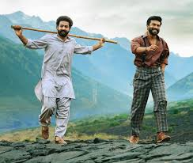
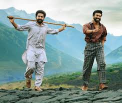
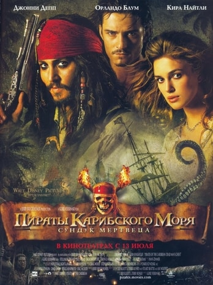
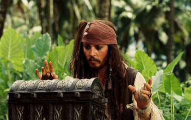
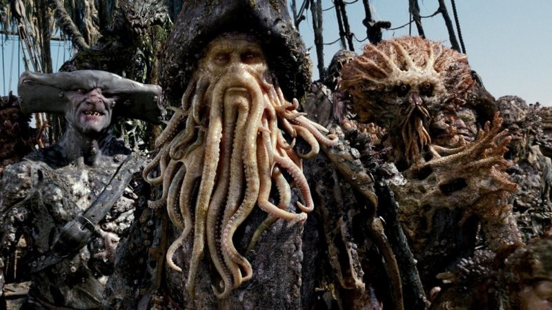
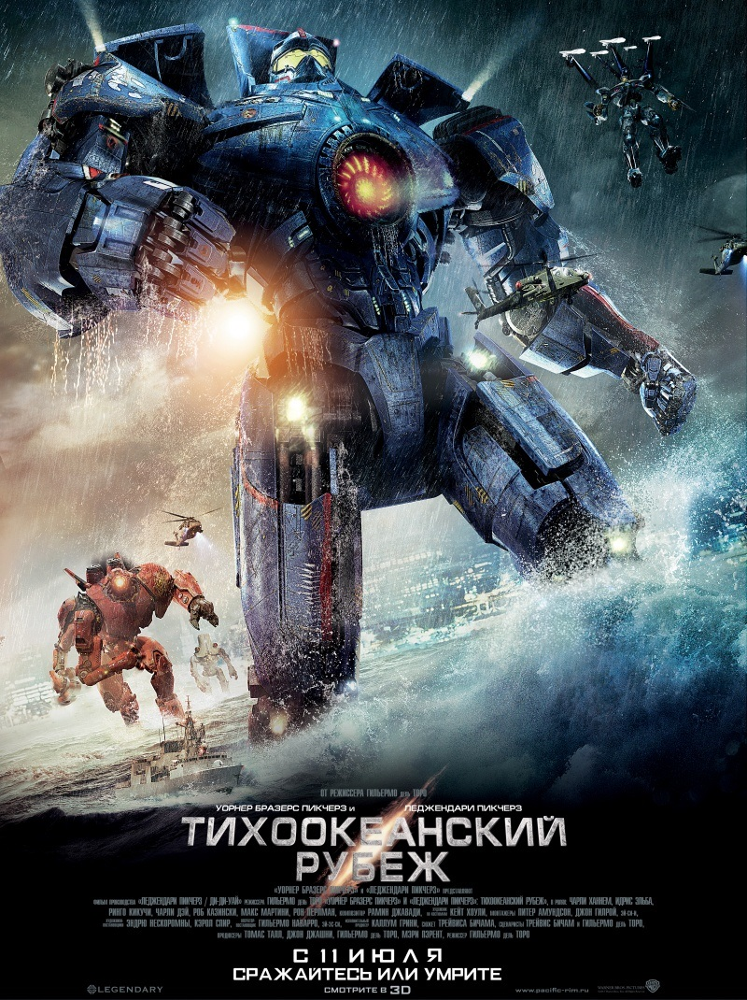
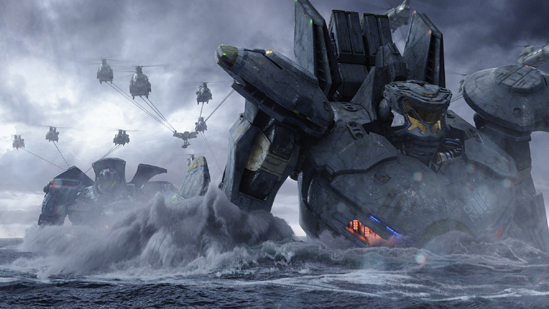
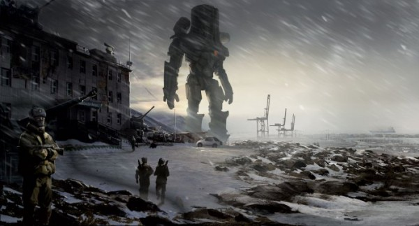

Мои любимые фильмы
РРР
Два героя революции противостоят британскому владычеству в колониальной Индии тысяча двевятьсот двадцатых годов.
Кадры из фильма

 

О фильме
| Год | 2022 |
| Страна | Индия |
| Жанр | Боевик, драма, история |
| Режиссер | С.С. Раджмаули |
Пираты Карибского моря: Сундук мертвеца
Краткое содержание фильма
Капитан Джек Воробей выступает против легендарного капитана "Летучего Голлландца" Дэйви Джонса и его команды. Вторая часть саги.
Кадры из фильма



О фильме
| Год | 2006 |
| Страна | США |
| Жанр | Фэнтези, боевик, приключения |
| Режиссер | Гор Вербински |
Тихоокеанский рубеж
Краткое содержание фильма
Я забыл...
Кадры из фильма



О фильме
| Год | 2013 |
| Страна | США |
| Жанр | Фантастика, боевик, приключения |
| Режиссер | Гильермо дель Торо |